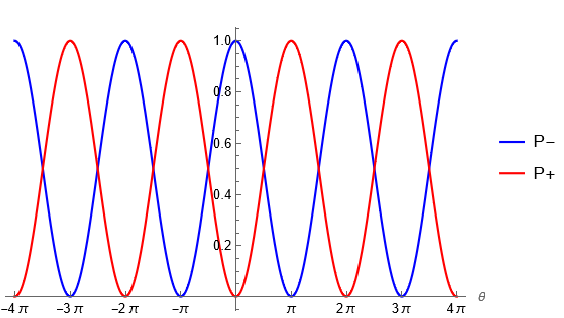
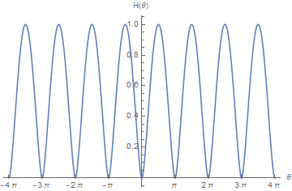

經云: 「一陰一陽之謂道。」 有形之器生於無形之道，無形之道生於有形之器。＜三命通會＞曰:「一動一靜，互為其根，分陰分陽，兩儀立焉。 儀者物也。凡物未始無對，而亦未嘗獨立。」又曰:「動靜無端，陰陽無始，始造化所由立焉。」 由此可見，陰陽相依，對立而統一，亦不分先後，同時 而成。<黃帝陰符經>曰:「生者死之根，死者生之根，恩生於害，害生於恩。」所以陰陽互為其根。＜周易集解＞云：「陰生陽，陽生陰，其變無窮，理與晝皆然也。...陰陽轉易，以成化生。」，生生之謂易。陰陽轉化，窮窮無盡，生生不息。 所以我們能看出，陰陽轉化是一種周期運動。經云:陰極變陽，陽極變陰。物極必反之理也。又有否極泰來，絕處逢生等義。
欲要以物理描述易學，我們必須要以下作出幾點。何為陰何為陽? 何為相依？何為對立？ 何為統一? 怎樣描述陰陽相推的週期運動? 我們發現運用量子力學中
Qubit (二元子)的慨念，可以一一道出以上形而上學的哲學慨念。Qubit 的波涵數為:
$$|\psi\rangle = \alpha |--\rangle + \beta |-\rangle = \alpha |0\rangle + \beta |1\rangle $$.
陰態和陽能的機會率分別為:
$$ P_0 = |\langle 0 | \psi \rangle |^2 = \alpha^2 \quad , \quad P_1 = |\langle 1 | \psi \rangle |^2 = \beta^2 $$
陰態和陽能的機會率總和為一,
$$\alpha^2 + \beta^2 =1 $$
所以陰和陽分別是量子態 \( |--\rangle =|0 \rangle\) 和\( |-\rangle =|1 \rangle\)。所以氣就是態，狀態，英文是state. 陰陽二元對立不相交
$$\langle --| - \rangle = \langle 0 | 1 \rangle = 0$$.
我們取 \( \alpha ,\beta \) 為實數，可取
$$|\psi(\theta)\rangle = \cos\frac{\theta}{2}|--\rangle + \sin\frac{\theta}{2}|-\rangle =\cos\frac{\theta}{2}|0\rangle + \sin\frac{\theta}{2}|1\rangle $$
而\( \theta \) 為 \( \omega t \). 所以陰陽的機會率隨著時間週期性地運動。再設陰態為負\( |--\rangle \equiv |-\rangle \) ，陽態為正\( |-\rangle \equiv |+\rangle \) ,
這陰陽系統的平均能量為:
$$ \langle E \rangle = \sum_{j=0,1} |\langle j | \psi \rangle |^2 E_j $$
即是
$$\langle E(\theta) \rangle = \cos^2 \frac{\theta}{2} \, E_{-} + \sin^2 \frac{\theta}{2} \, E_{+} $$
所以陰消陽長和陽長陰消其實是機會率上隨時間上的變化。
$$ P_- = \cos^2 \frac{\omega t}{2} \quad , \quad \sin^2 \frac{\omega t}{2} $$

這描述了易學的義理。極處就是指整數\( \pi\)的據點。當陰態的機會率升至最高時它一定會下降而同時陽態的機會率升高。當陰態的機會跌至最低時它一定會上升而同時陽的機會率下降。
如此類堆，當陽態的機會升至最高時它一定會下降而同時陰態的機會率升高。當陽態的機會跌至最低時它一定會上升而同時陰的機會率下降。這就是易學所說的陰極變陽，陽極變陰之道理。
在極處的相變值(phase value)，我們會得到純陰態及純陽態，他們所得機會率是決定性的一。例如在開始時間為 \( t=0 \) 時，
$$ |\psi(0) \rangle = |--\rangle $$.
假設現在相變(phase) 前進了一點，為t>0 ， 那麼我們應得到
$$ |\psi(0+\delta) \rangle = (1-\epsilon) |--\rangle + \eta |-\rangle $$ ，
\(\delta \) , \(\epsilon \) , \(\eta \) 是小數值。這表示陰態的比例在下降及陽態的比例開始上升。這是在易學中所說的陰極陽生，可視為有些陰態轉成陽態。而實質上嚴格地說，
其實是陰態與陽態的機會率互相交換及轉化，而不是態的交換。所以易經所說的氣的變化，其實是態的機會率之交換變化，而不是態本身之交換變化。用小角估算，
$$ |\psi (\delta) \rangle = \cos \frac{\delta}{2}|--\rangle + \sin\frac{\delta}{2}|-\rangle \approx \bigg( 1- \frac{\delta^2}{4}\bigg)|--\rangle + \frac{\delta}{2}|-\rangle\,. $$
所以 \(\epsilon = \frac{\delta^2}{4}\) 及 \(\eta=\frac{\delta}{2} \).
而在陽的說，
$$ |\psi (\pi) \rangle = | -\rangle\,. $$
現在假設相變(phase) 進化了一點，在相變\( \pi \) 之前，我們會得到
$$ |\psi (\pi- \delta) \rangle = \eta|--\rangle + \bigg(1-\frac{\delta^2}{4} \bigg)| -\rangle\,. $$
這意味著陽態的比例下降而陰態的比例開始上升。這就是易學中陽極生陰的道理。再用小角估算，
$$\begin{aligned}
|\psi (\pi- \delta) \rangle &= \cos\bigg(\frac{\pi}{2}-\frac{\delta}{2}\bigg)|--\rangle + \sin\bigg(\frac{\pi}{2}-\frac{\delta}{2}\bigg)|-\rangle \\
&=\sin\frac{\delta}{2}|--\rangle + \cos\frac{\delta}{2}|-\rangle \\
&\approx \frac{\delta}{2}|--\rangle + \bigg(1-\frac{\delta^2}{4}\bigg)|-\rangle \,.
\end{aligned}$$
所以 \(\epsilon = \frac{\delta^2}{4}\) 及 \(\eta=\frac{\delta}{2} \).
平均能量的第一次導數是
$$ \frac{d\langle E(\theta) \rangle}{d\theta} = \frac{1}{4}\sin\theta ( E_{+} - E_{-} ) \,.$$
所以平均能量的極處條件是\(\sin\theta =0 \) 或 \( \Delta E=E_+ - E_- =0 \)。 即是\( \theta = \pm k \pi \)。至於它是最小值還是最大值，我們可考慮二次導數，
$$ \frac{d^2\langle E(\theta) \rangle}{d\theta^2} = \frac{1}{4}\cos\theta ( E_{+} - E_{-} ) \,. $$
如果\( E_+ > E_- \)，那麼最小值發生在\( \theta = \pm 2k\pi \) 及 最大值發生在 \( \theta = \pm (2k+1)\pi \)。假設陽能 \( E_+ > 0\) 及
及陰能 \( E_- < 0\) ，它們的大小(magnitude)一樣 \( |E_+ | = | E_- | = E \)，我們便得到平均能量循環地流動，
$$ \langle E(t) \rangle = E \cos\, \omega t \,. $$
故此陰氣陽氣相推生生不息之理，在物理中是以三角函數表達出來，陰陽的機率隨時間循環往復，不停流轉。
接下來會介一個較複雜的概念-熵(Entropy) 。熵在熱動力學及統計力學中是用來描述系統的混亂性(disorderness)。在這裏我們會運用資訊學的熵去分柝二元陰陽的量子系統。
資訊學中的沙朗熵方程為，
$$H=-\sum_{i} p_i \log p_i $$
當中的\( p_i \) 為個別事件的機會率。我們陰陽量子系統的熵是
$$ H(\theta) = -2\cos^2 \frac{\theta}{2} \log \Big\vert\cos \frac{\theta}{2} \Big\vert -2 \sin^2 \frac{\theta}{2} \log \Big\vert \sin \frac{\theta}{2} \Big\vert\,. $$

這圖是處處連續和對稱的。是高值發生在 \( \pm \frac{k\pi}{2} \) ，是1比特，其量子態為
$$ |\psi\rangle = \frac{1}{\sqrt{2}}( |0\rangle + |1\rangle )\,. $$
這量子態含有二元對稱不變性，我們會發現若我們將0 和 1 對換，量子態 \( |\psi \rangle \) 依然維持不變，i.e.
$$\begin{pmatrix}
|1\rangle \\
|0\rangle
\end{pmatrix}
=\begin{pmatrix}
0 & 1\\
1 & 0\\
\end{pmatrix}
\begin{pmatrix}
|0\rangle \\
|1\rangle
\end{pmatrix}
$$
當熵是最高時，系統達平衝狀態(equilibrium)，這必定發生在\( \alpha = \beta \) 的時候。得陰態和得陽態的機會均等，都是 \( \frac{1}{2}\)。這是易學中的
中庸之道。中庸者，不偏不倚，平衡也。這也是唯一的時候出現陰陽二元互換對稱不變性。 相反，純陰態和純陽態是熵為0 的時候，並發坐在\( \theta =\pm k\pi \)。這是很易理解的，因為
純陰態和純陽態都是機會為1的時候，即是完全可決定的(deterministic)，這時沒有別的可能性，而是highly ordered 的，這也是完失衡及偏執一處的時候。